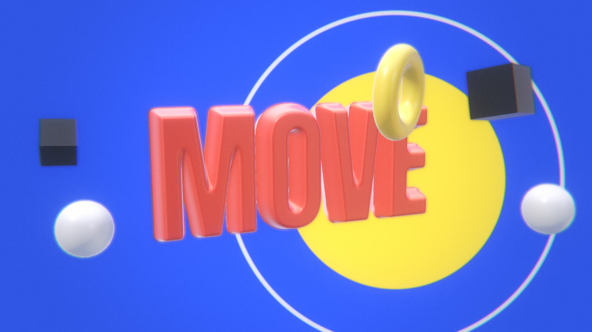

Cinewright is an open-source skill for Codex, Claude Code and friends. Every frame is code, every sound is synthesised — no stock footage, no video model, no cloud. Same prompt, same agent: the difference is the skill.سینهرایت یک اسکیل متنباز برای Codex، Claude Code و همقطارانشان است. هر فریم کد است و هر صدا با کد ساخته میشود — بدون ویدیوی استوک، بدون مدل ویدیوساز، بدون ابر. پرامپت یکسان، ایجنت یکسان: تفاوت فقط اسکیل است. فارسی و راستبهچپ هم درجهیک پشتیبانی میشود.
$ Each agent got the identical request in a clean folder; the only difference is the skill. Codex ran unattended at xhigh reasoning (gpt-6-astra, and gpt-6.1-sol on the showreel). Pick a prompt below — everyday motion graphics first. Every agent is compared with itself — never with another agent. Press play: the sound is part of the result.هر ایجنت همین درخواست را در یک پوشهٔ تمیز گرفت؛ تنها تفاوت، اسکیل است. Codex بدون نظارت و با ریزنینگ xhigh اجرا شد (gpt-6-astra، و روی شوریل gpt-6.1-sol). یکی از پرامپتهای زیر را انتخاب کنید — موشنگرافیهای روزمره اول. هر ایجنت فقط با خودش مقایسه میشود، نه با ایجنت دیگر. پلی بزنید: صدا هم بخشی از نتیجه است.
A film is a pure function of time. Drag the playhead — every frame you see is computed on the spot by the same code an agent writes. Rewind, scrub, jump to any second. It is how the agent checks its own work, too.فیلم تابعی خالص از زمان است. هد پخش را بکشید — هر فریم همان لحظه با همان کدی محاسبه میشود که ایجنت مینویسد. عقب بروید، رد شوید، به هر ثانیهای بپرید. ایجنت هم کار خودش را همینطور وارسی میکند.
Space = play/pause · ← → = ±1 s · the stage pulses on every beat of the film's own cue timeline.اسپیس = پخش/توقف · ← → = ±۱ ثانیه · صحنه با هر ضرب جدول زمانی خودِ فیلم میتپد.

A motion-graphics kit and a GPU toolkit written from scratch, deterministic down to the pixel.یک کیت موشنگرافی و جعبهابزار GPU که از صفر نوشته شده و تا سطح پیکسل قطعی است.
An atlas of 256 recipes with runnable code, a gallery so the agent can see before it chooses, and a generator that returns three different directions for every brief.اطلسی از ۲۵۶ دستورکار با کد اجرایی، گالری تا ایجنت قبل از انتخاب ببیند، و مولدی که برای هر بریف سه جهت متفاوت میدهد.
Studio mode: brief → look-dev → skeleton → three polish rounds. Then gates that measure, not hope.حالت استودیو: بریف ← سبکیابی ← اسکلت ← سه دور صیقل. بعد دروازههایی که اندازه میگیرند، نه امید.
brief.mdinspire.mjsvideo.html · audio.mjsrender.mjsqc.mjs checkSearch it like your agent does. Each card is a real recipe from the repository — click one to copy the command that shows its full code. The reels below are rendered by the atlas itself.همانطور که ایجنت جستجو میکند جستجو کنید. هر کارت یک دستورکار واقعی از ریپوست — کلیک کنید تا دستور نمایش کد کامل کپی شود. ریلهای زیر را خودِ اطلس رندر کرده است.
Every film below was made by a coding agent from one prompt — the prompt is on the card. Hover to preview; click to watch with sound.هر فیلم زیر را یک ایجنت کدنویس از روی یک پرامپت ساخته است — پرامپت روی کارت است. موس را ببرید برای پیشنمایش؛ کلیک کنید برای تماشا با صدا.
شکلدهی درست، راستبهچپ، کلمهبهکلمهحروف چسبیده، ارقام فارسی، نامهای لاتین سالم در خط راستبهچپ. کلمهها بهصورت کلمه انیمیت میشوند — هرگز حرفبهحرف.
هفت فونت فارسیوزیرمتن، لالهزار، امیری، ریمکوفی، عارف رقعه و رکّاس — همه آفلاین و همراه اسکیل.
ارقام و عددهاشمارشگرها، نمودارها و قیمتها با ارقام فارسی و جداکنندهٔ هزارگان درست نمایش داده میشوند.
The repository ships a benchmark: it hands a coding agent the same task in a clean folder, with and without the skill, then measures every finished film. The numbers below come straight from the committed result files — no hand-typing.ریپو یک بنچمارک دارد: همان تسک را در پوشهٔ تمیز، با و بدون اسکیل، به ایجنت میدهد و هر فیلم را میسنجد. اعداد زیر مستقیم از فایلهای نتیجهٔ ثبتشده میآیند — بدون تایپ دستی.
frame fill = share of each frame that is not background (higher = bolder pictures) · static = share of the film where almost nothing changes (lower = more motion) · LRA = loudness range, dynamics of the mix. These measure motion and sound hygiene, not beauty — that is what the films above are for. n = 1 per cell: one run is an anecdote. Full report & method · run it yourself — and tell us if it contradicts us.پُری قاب = سهمی از هر فریم که پسزمینه نیست (بیشتر = تصویر جسورتر) · ساکن = سهمی از فیلم که تقریباً هیچ چیز تغییر نمیکند (کمتر = حرکت بیشتر) · LRA = دامنهٔ بلندی صدا، پویایی میکس. اینها سلامت حرکت و صدا را میسنجند نه زیبایی — برای زیبایی فیلمهای بالا هست. یک اجرا برای هر خانه فقط یک حکایت است. گزارش کامل و روش · خودتان اجرا کنید — و اگر خلافش درآمد بگویید.
Needs Node ≥ 18, Chrome/Edge/Chromium and ffmpeg — the installer checks and tells you what is missing. No npm install.به Node ≥ 18، Chrome/Edge و ffmpeg نیاز دارد — نصبکننده بررسی میکند و میگوید چه کم است. npm install لازم نیست.
irm https://raw.githubusercontent.com/msmahdinejad/cinewright/main/install.ps1 | iex
curl -fsSL https://raw.githubusercontent.com/msmahdinejad/cinewright/main/install.sh | bash
/plugin marketplace add msmahdinejad/cinewright /plugin install cinewright@cinewright
npx skills add msmahdinejad/cinewright
docker build -t cinewright https://github.com/msmahdinejad/cinewright.git docker run --rm -v "$PWD/film:/work" cinewright scaffold /work --template showreel docker run --rm -v "$PWD/film:/work" cinewright render
More in the prompt cookbook.بیشتر در نمونهپرامپتها.